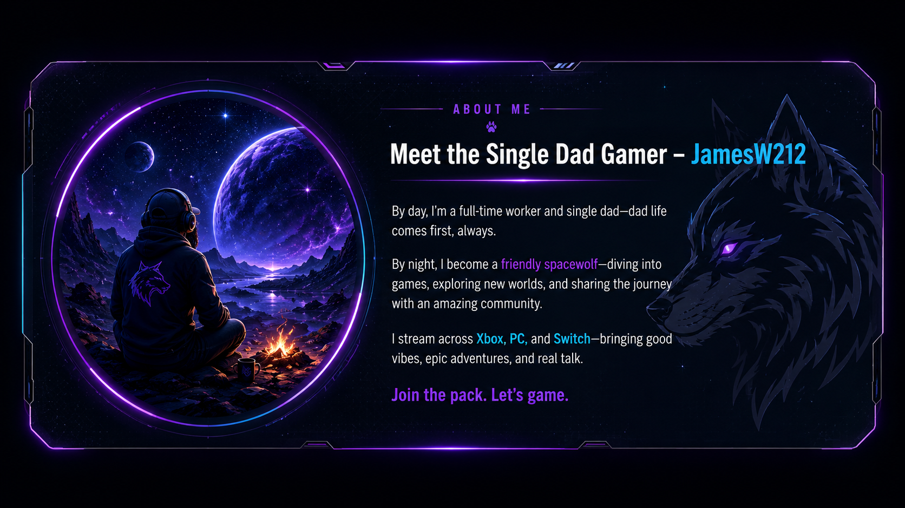
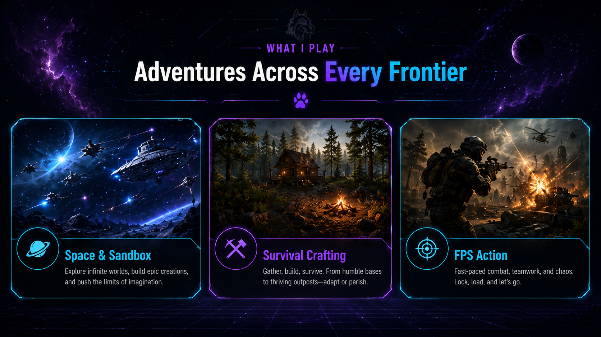

Space & Sandbox
Space Engineers, No Man’s Sky, ship builds, exploration, and creative chaos.
 Jamesw212 Gaming
Jamesw212 Gaming
Welcome to the pack
I’m JamesW212 — a single dad gamer streaming survival crafting, FPS chaos, sandbox builds, and space exploration across Xbox, PC, and Switch.

Meet the streamer
By day, I’m a full-time worker. By night, I become your friendly spacewolf — gaming, exploring, and connecting with awesome people like you.
I stream FPS chaos, survival crafting, and sandbox chillouts. Whether I’m battling dinosaurs in ARK or building starships in Space Engineers, you’ll catch the journey live or on replay.
Join the Pack. Let’s game.
What I play
From space builds and survival worlds to FPS chaos, the channel is built around games that create stories, laughs, and unexpected moments.

Space Engineers, No Man’s Sky, ship builds, exploration, and creative chaos.
ARK, base building, resource runs, taming, survival, and “how did that happen?” moments.
Battlefield, COD-style chaos, teamwork, clutch plays, and casual competitive fun.
Live
Twitch brings the hype. YouTube brings the archives. Either way, you’re invited. Check the schedule for upcoming streams or jump into the past streams archive.
Past streams
Catch past streams, builds, survival runs, and channel moments in the replay archive. This section can link directly to your YouTube uploads, playlists, or a Google Sites archive page.
Support the stream
Watching, subscribing, sharing the stream, and joining the chat all help the channel grow. Donations or support links can go here later when you are ready.